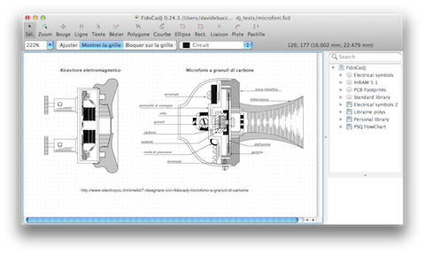

FidoCadJ is an easy to use vector graphic editor, with a library of electrical symbols and footprints (traditional and SMD). It is an agile and effective small tool. FidoCadJ stores the drawings in a compact format, that can be copied and pasted in newsgroups and forum messages. FidoCadJ is free software and multi-platform and runs on MacOSX, Linux, Windows and Android.
Screenshots
|  | microfoni.fcd (from an EY article) |

|
eccitatore.fcd |

|
eccitatore.fcd |

|
steinmetz.fcd (from an EY article) |
{kind=link}
Still curious about FidoCadJ? Give it a try!
FidoCadJ is a very simple vector drawing program. A lot of symbols for electronic circuits are included, but you can draw more or less anything. You can build your symbols and reuse as much as you want. FidoCadJ is routinely used in forums and in blog posts, as the file format is perfect for sharing drawings. FidoCadJ is complementary with the big EDA electronic tools. Ever tried to include your schematics in a document or in a presentation? Were you happy of the result? FidoCadJ can export drawings in several graphical formats (PDF, EPS, SVG, PNG, JPG). LaTeX users will be happy about the possibility of including drawings in documents via the PGF/TikZ export.
FidoCadJ is the official drawing tool of ElectroYou, the italian social network for electronics.

Give us your feedback about FidoCadJ! The best thing to do is to write a review on Sourceforge, or participate to the forums. If you are happy, tell your friends :-) If you are a developer, contact us.
Follow the FidoCadJ development on Twitter: @davbucci
September, 20, 2014
License

--------
Copyright (C) 2007-2014 Davide Bucci davbucci at tiscali dot it and others.
This program is free software: you can redistribute it and/or modify
it under the terms of the GNU General Public License as published by
the Free Software Foundation, version 3 of the License.
This program is distributed in the hope that it will be useful,
but WITHOUT ANY WARRANTY; without even the implied warranty of
MERCHANTABILITY or FITNESS FOR A PARTICULAR PURPOSE. See the
GNU General Public License for more details.
You should have received a copy of the GNU General Public License
along with this program. If not, see http://www.gnu.org/licenses/.